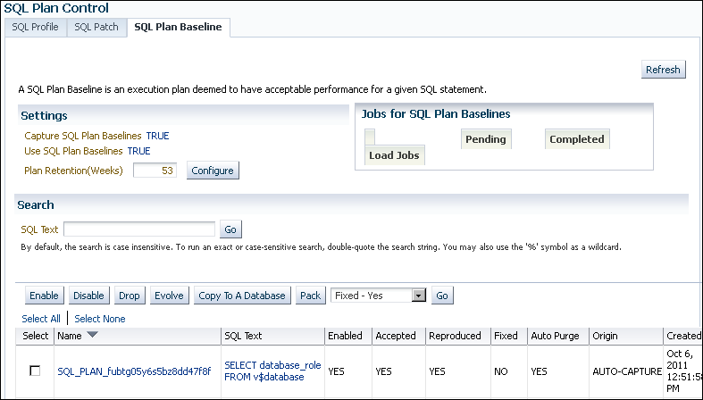
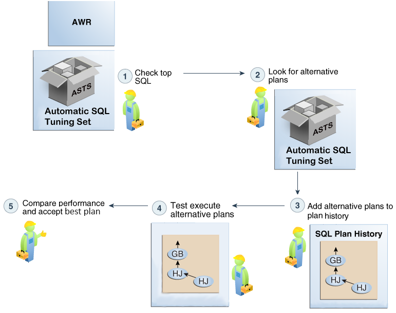
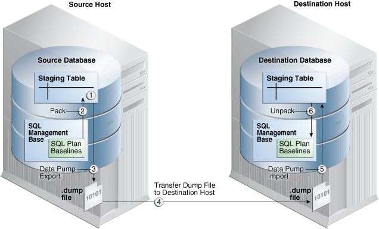
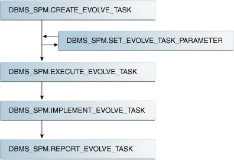

29 Managing SQL Plan Baselines
This chapter explains the concepts and tasks relating to SQL plan management using the DBMS_SPM package.
See Also:
-
Oracle Database PL/SQL Packages and Types Reference to learn more about
DBMS_SPM
About Managing SQL Plan Baselines
This topic describes the available interfaces and basic tasks for SQL plan management.
User Interfaces for SQL Plan Management
You can access the DBMS_SPM package through Cloud Control or through the command line.
Accessing the SQL Plan Baseline Page in Cloud Control
The SQL Plan Control page in Cloud Control is a GUI that shows information about SQL profiles, SQL patches, and SQL plan baselines.
To access the SQL Plan Baseline page:
-
Log in to Cloud Control with the appropriate credentials.
-
Under the Targets menu, select Databases.
-
In the list of database targets, select the target for the Oracle Database instance that you want to administer.
-
If prompted for database credentials, then enter the minimum credentials necessary for the tasks you intend to perform.
-
From the Performance menu, select SQL, then SQL Plan Control.
The SQL Plan Control page appears.
-
Click Files to view the SQL Plan Baseline subpage, shown in Figure 29-1.
Figure 29-1 SQL Plan Baseline Subpage

Description of "Figure 29-1 SQL Plan Baseline Subpage"You can perform most SQL plan management tasks in this page or in pages accessed through this page.
See Also:
-
Cloud Control context-sensitive online help to learn about the options on the SQL Plan Baseline subpage
DBMS_SPM Package
On the command line, use the DBMS_SPM and DBMS_XPLAN PL/SQL packages to perform most SQL plan management tasks.
The following table describes the most relevant DBMS_SPM procedures and functions for creating, dropping, and loading SQL plan baselines.
Table 29-1 DBMS_SPM Procedures and Functions
| Procedure or Function | Description |
|---|---|
|
|
This procedure changes configuration options for the SMB in name/value format. |
|
|
This procedure creates a staging table that enables you to transport SQL plan baselines from one database to another. |
|
|
This function drops some or all plans in a plan baseline. |
|
|
This function loads plans in the shared SQL area (also called the cursor cache) into SQL plan baselines. |
|
|
This function loads plans in an STS into SQL plan baselines. |
|
|
This function loads plans from AWR into SQL plan baselines. |
|
|
This function packs SQL plan baselines, which means that it copies them from the SMB into a staging table. |
|
|
This function unpacks SQL plan baselines, which means that it copies SQL plan baselines from a staging table into the SMB. |
Also, you can use DBMS_XPLAN.DISPLAY_SQL_PLAN_BASELINE to show one or more execution plans for the SQL statement identified by SQL handle.
See Also:
-
"About the DBMS_SPM Evolve Functions" describes the functions related to SQL plan evolution.
-
Oracle Database PL/SQL Packages and Types Reference to learn about the
DBMS_SPMandDBMS_XPLANpackages
Basic Tasks in SQL Plan Management
This topic explains the basic tasks in using SQL plan management to prevent performance regressions and enable the optimizer to consider new execution plans.
The tasks are as follows:
-
Set initialization parameters to control whether the database captures and uses SQL plan baselines, and whether it evolves new plans.
-
Display plans in a SQL plan baseline.
-
Manually load plans into SQL plan baselines.
Load plans from AWR, SQL tuning sets, the shared SQL area, a staging table, or stored outlines.
See "Loading SQL Plan Baselines".
-
Manually evolve plans into SQL plan baselines.
Use PL/SQL to verify the performance of specified plans and add them to plan baselines.
-
Drop all or some plans in SQL plan baselines.
See "Dropping SQL Plan Baselines".
-
Manage the SMB.
Alter disk space limits and change the length of the plan retention policy.
-
Migrate stored outlines to SQL plan baselines.
Configuring SQL Plan Management
You can configure the capture and use of SQL plan baselines, and the SPM Evolve Advisor task.
Configuring the Capture and Use of SQL Plan Baselines
You control SQL plan management with the initialization parameters OPTIMIZER_CAPTURE_SQL_PLAN_BASELINES and OPTIMIZER_USE_SQL_PLAN_BASELINES.
The default values are as follows:
-
OPTIMIZER_CAPTURE_SQL_PLAN_BASELINES=falseFor any repeatable SQL statement that does not already exist in the plan history, the database does not automatically create an initial SQL plan baseline for the statement.
If
OPTIMIZER_CAPTURE_SQL_PLAN_BASELINES=true, then you can use theDBMS_SPM.CONFIGUREprocedure to configure filters that determine which statements are eligible for plan capture. By default, no filters are configured, which means that all repeatable statements are eligible for plan capture. -
OPTIMIZER_USE_SQL_PLAN_BASELINES=trueFor any SQL statement that has an existing SQL plan baseline, the database automatically adds new plans to the SQL plan baseline as unaccepted plans.
Note:
The settings of the preceding parameters are independent of each other. For example, if OPTIMIZER_CAPTURE_SQL_PLAN_BASELINES is true, then the database creates initial plan baselines for new statements even if OPTIMIZER_USE_SQL_PLAN_BASELINES is false.
If the default behavior is what you intend, then skip this section.
The following sections explain how to change the default parameter settings from the command line. If you use Cloud Control, then set these parameters in the SQL Plan Baseline subpage.
See Also:
Enabling Automatic Initial Plan Capture for SQL Plan Management
Setting the OPTIMIZER_CAPTURE_SQL_PLAN_BASELINES initialization parameter to true is all that is necessary for the database to automatically create an initial SQL plan baseline for any eligible SQL statement not already in the plan history.
By default, the database considers all repeatable SQL statements as eligible for capture, with the following exceptions:
-
CREATE TABLEwhen theAS SELECTclause is not specified -
DROP TABLE -
INSERT INTO ... VALUES
Caution:
By default, when automatic baseline capture is enabled, the database creates a SQL plan baseline for every eligible repeatable statement, including all recursive SQL and monitoring SQL. Thus, automatic capture may result in the creation of an extremely large number of plan baselines. To limit the statements that are eligible for plan baselines, configure filters using the DBMS_SPM.CONFIGURE procedure.
The OPTIMIZER_CAPTURE_SQL_PLAN_BASELINES parameter does not control the automatic addition of newly discovered plans to a previously created SQL plan baseline.
To enable automatic initial plan capture for SQL plan management:
-
In SQL*Plus, log in to the database with the necessary privileges.
-
Show the current settings for SQL plan management.
For example, connect SQL*Plus to the database with administrator privileges and execute the following command (sample output included):
SHOW PARAMETER SQL_PLANThe following sample output shows that automatic initial plan capture is disabled:
NAME TYPE VALUE ------------------------------------ ----------- ----- optimizer_capture_sql_plan_baselines boolean FALSE optimizer_use_sql_plan_baselines boolean TRUEIf the parameters are set as you intend, then skip the remaining steps.
-
To enable the automatic recognition of repeatable SQL statements and the generation of SQL plan baselines for these statements, enter the following statement:
ALTER SYSTEM SET OPTIMIZER_CAPTURE_SQL_PLAN_BASELINES=true;
See Also:
Oracle Database Reference to learn more about OPTIMIZER_CAPTURE_SQL_PLAN_BASELINES
Configuring Filters for Automatic Plan Capture
If OPTIMIZER_CAPTURE_SQL_PLAN_BASELINES=true, then you can use the DBMS_SPM.CONFIGURE procedure to create an automatic capture filter for repeatable statements.
An automatic filter enables you to capture only statements that you want, and exclude noncritical statements. This technique saves space in the SYSAUX tablespace.
The following table describes the relevant parameters of the DBMS_SPM.CONFIGURE procedure.
Table 29-2 DBMS_SPM.CONFIGURE Parameters
| Parameter | Description |
|---|---|
|
|
The type of filter for automatic capture. Possible values are |
|
|
The search criteria for the automatic capture filter. When
For all other non-null
A null value removes the filter for |
allow |
Whether to include (true) or exclude (false) matching SQL statements and plans. If null, then the procedure ignores the specified parameter.
|
You can configure multiple parameters of different types. Also, you can specify multiple values for the same parameter in separate statements, which the database combines. The settings are additive: one parameter setting does not override a previous setting. For example, the following filter captures SQL in the parsing schema SYS or SYSTEM:
EXEC DBMS_SPM.CONFIGURE('AUTO_CAPTURE_PARSING_SCHEMA_NAME','SYS',true);
EXEC DBMS_SPM.CONFIGURE('AUTO_CAPTURE_PARSING_SCHEMA_NAME','SYSTEM',true);However, you cannot configure multiple values for the same parameter in the same procedure. For example, you cannot specify multiple SQL text strings for AUTO_CAPTURE_SQL_TEXT.
The DBA_SQL_MANAGEMENT_CONFIG view shows the current parameter values.
This tutorial assumes the following:
-
The
OPTIMIZER_CAPTURE_SQL_PLAN_BASELINESinitialization parameter is set totrue. -
You want to include only statements parsed in the
shschema to be eligible for baselines. -
You want to exclude statements that contain the text
TEST_ONLY.
To filter out all statements except those parsed in the sh schema:
-
Connect SQL*Plus to the database with the appropriate privileges.
-
To remove any existing filters for parsing schema and SQL text, execute the following PL/SQL programs:
EXEC DBMS_SPM.CONFIGURE('AUTO_CAPTURE_PARSING_SCHEMA_NAME',null,true); EXEC DBMS_SPM.CONFIGURE('AUTO_CAPTURE_SQL_TEXT',null,true); -
Include only statements parsed in the
shschema for consideration for automatic capture:EXEC DBMS_SPM.CONFIGURE('AUTO_CAPTURE_PARSING_SCHEMA_NAME','sh',true); -
Exclude any statement that contains the text
TEST_ONLYfrom consideration for automatic capture:EXEC DBMS_SPM.CONFIGURE('AUTO_CAPTURE_SQL_TEXT','%TEST_ONLY%',false); -
Optionally, to confirm the filters, query
DBA_SQL_MANAGEMENT_CONFIG.For example, use the following query (sample output included):
COL PARAMETER_NAME FORMAT a32 COL PARAMETER_VALUE FORMAT a32 SELECT PARAMETER_NAME, PARAMETER_VALUE FROM DBA_SQL_MANAGEMENT_CONFIG WHERE PARAMETER_NAME LIKE '%AUTO%'; PARAMETER_NAME PARAMETER_VALUE -------------------------------- -------------------------------- AUTO_CAPTURE_PARSING_SCHEMA_NAME parsing_schema IN (SH) AUTO_CAPTURE_MODULE AUTO_CAPTURE_ACTION AUTO_CAPTURE_SQL_TEXT (sql_text NOT LIKE %TEST_ONLY%)
See Also:
-
Oracle Database PL/SQL Packages and Types Reference to learn more about the
DBMS_SPM.CONFIGUREprocedure -
Oracle Database Reference to learn more about the
DBA_SQL_MANAGEMENT_CONFIGview
Disabling All SQL Plan Baselines
When you set the OPTIMIZER_USE_SQL_PLAN_BASELINES initialization parameter to false, the database does not use any plan baselines in the database.
Typically, you might want to disable one or two plan baselines, but not all of them. A possible use case might be testing the benefits of SQL plan management.
To disable all SQL plan baselines in the database:
-
Connect SQL*Plus to the database with the appropriate privileges, and then show the current settings for SQL plan management.
For example, connect SQL*Plus to the database with administrator privileges and execute the following command (sample output included):
SQL> SHOW PARAMETER SQL_PLAN NAME TYPE VALUE ------------------------------------ ----------- ----- optimizer_capture_sql_plan_baselines boolean FALSE optimizer_use_sql_plan_baselines boolean TRUEIf the parameters are set as you intend, then skip the remaining steps.
-
To ignore all existing plan baselines enter the following statement:
SQL> ALTER SYSTEM SET OPTIMIZER_USE_SQL_PLAN_BASELINES=false
See Also:
Oracle Database Reference to learn about the SQL plan baseline initialization parameters
Managing the SPM Evolve Advisor Task
SPM Evolve Advisor is a SQL advisor that evolves plans that have recently been added to the SQL plan baseline. The advisor simplifies plan evolution by eliminating the requirement to do it manually.
Automatic SQL Plan Management
A SQL plan baseline prevents performance regressions caused by suboptimal plans.
The High Frequency SPM Evolve Advisor Task can be configured to identify execution plan changes and compare the performance of the new plan with plans previously captured in the automatic SQL tuning set
If an SQL statement does not have a SQL plan baseline, then the High Frequency SPM Evolve Advisor Task can sometimes resolve such performance regressions automatically. The advisor compares all available plans and chooses the best-performing plan as the baseline.
The SPM configuration parameter AUTO_SPM_EVOLVE_TASK
controls Automatic SQL Plan Management. The setting ON enables this
task in the background. It can also be set to OFF.
The following figure shows the workflow for the High Frequency SPM Evolve Advisor Task:
Figure 29-2 High Frequency SPM Evolve Advisor Task

Description of "Figure 29-2 High Frequency SPM Evolve Advisor Task"
Whenever it runs, the High Frequency SPM Evolve Advisor Task performs the following tasks:
-
Searches AWR and ASTS for resource-intensive SQL statements.
-
Looks for alternative plans in the automatic SQL tuning set.
-
If multiple plans are identified, they are added to the SQL plan history.
-
Test executes and measures the performance of the plans alternatives.
The database test executes the statement and records the performance statistics.
-
Performs either of the following actions, depending on whether the alternative plan performs better than the current plan:
-
If performance is better, then High Frequency SPM Evolve Advisor accepts the plan. The alternative plan is now in the baseline.
-
If performance is worse, then the plan remains in the statement history, but not the baseline.
-
See Also:
- The Automatic SQL Tuning Set, the system-maintained record of SQL execution plans and SQL statement performance metrics seen by the database. The High Frequency SPM Evolve Advisor Task compares the performance of a new plan with plans previously captured in the automatic SQL tuning set.
-
Oracle Database Licensing Information User Manual for details on which features are supported for different editions and services
-
Oracle Database PL/SQL Packages and Types Reference to learn more about the
DBMS_SPM.SET_EVOLVE_TASK_PARAMETERprocedure
Enabling and Disabling the Automatic SPM Evolve Advisor Task
No separate scheduler client exists for the Automatic SPM Evolve Advisor task.
One client controls both Automatic SQL Tuning Advisor and Automatic SPM Evolve Advisor. Thus, the same task enables or disables both. You can also disable it using DBMS_SPM.SET_EVOLVE_TASK_PARAMETER.
To disable the Automatic SPM Evolve Advisor task:
-
Log in to the database with the appropriate privileges.
-
Set the
ALTERNATE_PLAN_BASELINEparameter to null:BEGIN DBMS_SPM.SET_EVOLVE_TASK_PARAMETER( task_name => 'SYS_AUTO_SPM_EVOLVE_TASK', parameter => 'ALTERNATE_PLAN_BASELINE', value => ''); END; / -
Set the
ALTERNATE_PLAN_SOURCEparameter to an empty string:BEGIN DBMS_SPM.SET_EVOLVE_TASK_PARAMETER( task_name => 'SYS_AUTO_SPM_EVOLVE_TASK', parameter => 'ALTERNATE_PLAN_SOURCE', value => ''); END; /
See Also:
"Enabling and Disabling the Automatic SQL Tuning Task" to learn how to enable and disable Automatic SPM Evolve Advisor
Configuring the Automatic SPM Evolve Advisor Task
Configure automatic plan evolution by using the DBMS_SPM package.
Overview of the Automatic SPM Evolve Advisor Task
Specify the automatic task parameters using the SET_EVOLVE_TASK_PARAMETER procedure. The following table describes some procedure parameters.
Table 29-3 DBMS_SPM.SET_EVOLVE_TASK_PARAMETER Parameters
| Parameter | Description | Default |
|---|---|---|
|
|
Determines which sources to search for additional plans:
You can combine multiple values with the plus sign ( |
The default depends on whether the SPM Evolve Advisor task is automated or manual:
|
|
|
Determines which alternative plans should be loaded:
You can combine multiple values with the plus sign ( |
|
|
|
Specifies the maximum number of plans to load in total (that is, not the limit for each SQL statement). |
The default depends on whether the SPM Evolve Advisor task is automated or manual:
|
|
|
Specifies whether to accept recommended plans automatically. When When |
|
|
|
Global time limit in seconds. This is the total time allowed for the task. |
The default depends on whether the SPM Evolve Advisor task is automated or manual:
|
Assumptions
The tutorial in this section assumes the following:
-
You can log in to the database as
SYS. Because theSYS_AUTO_SPM_EVOLVE_TASKtask is owned bySYS, onlySYScan set task parameters. -
You want the database to accept plans automatically.
-
You want the task to time out after 1200 seconds per execution.
-
You want the evolve task to look for up to a maximum of 500 plans in the shared SQL area and AWR repository
To set automatic evolution task parameters:
-
Start SQL*Plus, and then log in to the database as
SYS. -
Query the current parameter settings for
SYS_AUTO_SPM_EVOLVE_TASK.For example, connect SQL*Plus to the database with administrator privileges and execute the following query:
COL PARAMETER_NAME FORMAT a25 COL VALUE FORMAT a42 SELECT PARAMETER_NAME, PARAMETER_VALUE AS "VALUE" FROM DBA_ADVISOR_PARAMETERS WHERE ( (TASK_NAME = 'SYS_AUTO_SPM_EVOLVE_TASK') AND ( (PARAMETER_NAME = 'ACCEPT_PLANS') OR (PARAMETER_NAME LIKE '%ALT%') OR (PARAMETER_NAME = 'TIME_LIMIT') ) );Sample output appears as follows:
PARAMETER_NAME VALUE ------------------------- ------------------------------------------ ALTERNATE_PLAN_LIMIT 0 ALTERNATE_PLAN_SOURCE CURSOR_CACHE+AUTOMATIC_WORKLOAD_REPOSITORY ALTERNATE_PLAN_BASELINE EXISTING ACCEPT_PLANS true TIME_LIMIT 3600 -
Set parameters using PL/SQL code of the following form:
BEGIN DBMS_SPM.SET_EVOLVE_TASK_PARAMETER( task_name => 'SYS_AUTO_SPM_EVOLVE_TASK' , parameter => parameter_name , value => value ); END; /For example, the following PL/SQL block configures the
SYS_AUTO_SPM_EVOLVE_TASKtask to automatically accept plans, seek up a maximum of 500 plans in the shared SQL area and AWR repository, and time out after 20 minutes:BEGIN DBMS_SPM.SET_EVOLVE_TASK_PARAMETER( task_name => 'SYS_AUTO_SPM_EVOLVE_TASK' , parameter => 'TIME_LIMIT' , value => '1200' ); DBMS_SPM.SET_EVOLVE_TASK_PARAMETER( task_name => 'SYS_AUTO_SPM_EVOLVE_TASK' , parameter => 'ACCEPT_PLANS' , value => 'true' ); DBMS_SPM.SET_EVOLVE_TASK_PARAMETER( task_name => 'SYS_AUTO_SPM_EVOLVE_TASK' , parameter => 'ALTERNATE_PLAN_LIMIT' , value => '500' ); END; / -
Optionally, confirm your changes by querying the current parameter settings for
SYS_AUTO_SPM_EVOLVE_TASK.For example, execute the following query:
SELECT PARAMETER_NAME, PARAMETER_VALUE AS "VALUE" FROM DBA_ADVISOR_PARAMETERS WHERE ( (TASK_NAME = 'SYS_AUTO_SPM_EVOLVE_TASK') AND ( (PARAMETER_NAME = 'ACCEPT_PLANS') OR (PARAMETER_NAME LIKE '%ALT%') OR (PARAMETER_NAME = 'TIME_LIMIT') ) );Sample output appears as follows:
PARAMETER_NAME VALUE ------------------------- ------------------------------------------ ALTERNATE_PLAN_LIMIT 500 ALTERNATE_PLAN_SOURCE CURSOR_CACHE+AUTOMATIC_WORKLOAD_REPOSITORY ALTERNATE_PLAN_BASELINE EXISTING ACCEPT_PLANS true TIME_LIMIT 1200
See Also:
-
Oracle Database PL/SQL Packages and Types Reference for complete reference information for
DBMS_SPM.SET_EVOLVE_TASK_PARAMETER -
Oracle Database Reference to learn more about the
DBA_ADVISOR_PARAMETERSview
Configuring the High-Frequency Automatic SPM Evolve Advisor Task
You can configure automatic plan evolution to occur more frequently.
About the High-Frequency Automatic SPM Evolve Advisor Task
The high-frequency SPM Evolve Advisor task complements the standard Automatic SPM Evolve Advisor task.
By default, SYS_AUTO_SPM_EVOLVE_TASK runs daily in the scheduled AutoTask maintenance window. If data changes frequently between two consecutive task executions, then the optimizer may choose suboptimal plans. For example, if product list prices change more frequently than executions of SYS_AUTO_SPM_EVOLVE_TASK, then more out-of-range queries may occur, possibly leading to suboptimal plans.
When you enable the high-frequency Automatic SPM Evolve Advisor task, SYS_AUTO_SPM_EVOLVE_TASK runs more frequently, performing the same operations during every execution. The high-frequency task runs every hour and runs for no longer than 30 minutes. These settings are not configurable. The frequent executions mean that the optimizer has more opportunities to find and evolve better performing plans.
Both the standard Automatic SPM Evolve Advisor task and high-frequency task have the same name: SYS_AUTO_SPM_EVOLVE_TASK. In DBA_ADVISOR_EXECUTIONS, the two tasks are distinguished by execution name. The name of the standard task execution has the form EXEC_number, whereas the name of the high-frequency execution has the form SYS_SPM_timestamp.
DBMS_SPM.CONFIGURE enables the high-frequency task, but has no dependency on the SPM Evolve Advisor. The standard task and high-frequency task are independent and are scheduled through two different frameworks.
See Also:
-
Oracle Database Licensing Information User Manual for details on which features are supported for different editions and services
-
Oracle Database PL/SQL Packages and Types Reference to learn more about the
DBMS_SPM.CONFIGUREprocedure
Enabling the High-Frequency Automatic SPM Evolve Advisor Task: Tutorial
To enable and disable the high-frequency Automatic SPM Evolve Advisor task, use the DBMS_SPM.CONFIGURE procedure.
You can set auto_spm_evolve_task to any of the following values:
-
ON— Enables the high-frequency SPM Evolve Advisor task. -
OFF— Disables the high-frequency SPM Evolve Advisor task. This is the default. -
AUTO— Allows the database to determine when to execute the high-frequency SPM Evolve Advisor task. In this release,AUTOis equivalent toOFF.
Note that the task interval and runtime are fixed and cannot be adjusted by the user.
To enable the high-frequency SPM Evolve Advisor task:
-
Log in to the database as
SYS. -
Query the current setting for
DBMS_SPM.CONFIGURE(sample output included):COL PARAMETER_NAME FORMAT a32 COL PARAMETER_VALUE FORMAT a32 SELECT PARAMETER_NAME, PARAMETER_VALUE FROM DBA_SQL_MANAGEMENT_CONFIG WHERE PARAMETER_NAME LIKE '%SPM%'; PARAMETER_NAME PARAMETER_VALUE -------------------------------- -------------------------------- AUTO_SPM_EVOLVE_TASK OFF AUTO_SPM_EVOLVE_TASK_INTERVAL 3600 AUTO_SPM_EVOLVE_TASK_MAX_RUNTIME 1800 -
Enable the task.
Execute the following PL/SQL code:
EXEC DBMS_SPM.CONFIGURE('AUTO_SPM_EVOLVE_TASK', 'ON'); -
To confirm that the task is enabled, query the current setting for
AUTO_SPM_EVOLVE_TASK(sample output included):COL PARAMETER_NAME FORMAT a32 COL PARAMETER_VALUE FORMAT a32 SELECT PARAMETER_NAME, PARAMETER_VALUE FROM DBA_SQL_MANAGEMENT_CONFIG WHERE PARAMETER_NAME = 'AUTO_SPM_EVOLVE_TASK'; PARAMETER_NAME PARAMETER_VALUE -------------------------------- -------------------------------- AUTO_SPM_EVOLVE_TASK ON -
Optionally, wait a few hours, and then query the status of the task executions:
SET LINESIZE 150 COL TASK_NAME FORMAT a30 COL EXECUTION_NAME FORMAT a30 SELECT TASK_NAME, EXECUTION_NAME, STATUS FROM DBA_ADVISOR_EXECUTIONS WHERE TASK_NAME LIKE '%SPM%' AND (EXECUTION_NAME LIKE 'SYS_SPM%' OR EXECUTION_NAME LIKE 'EXEC_%') ORDER BY EXECUTION_END; TASK_NAME EXECUTION_NAME STATUS ------------------------------ ------------------------------ --------- SYS_AUTO_SPM_EVOLVE_TASK SYS_SPM_2019-06-03/13:15:26 COMPLETED SYS_AUTO_SPM_EVOLVE_TASK SYS_SPM_2019-06-03/14:16:04 COMPLETED SYS_AUTO_SPM_EVOLVE_TASK EXEC_6 COMPLETED SYS_AUTO_SPM_EVOLVE_TASK SYS_SPM_2019-06-03/15:16:32 COMPLETED SYS_AUTO_SPM_EVOLVE_TASK SYS_SPM_2019-06-03/16:17:00 COMPLETED ...In the preceding output,
EXEC_6is the execution name of the standard SPM Automatic Advisor task. The other executions are of the high-frequency task.
Displaying Plans in a SQL Plan Baseline
To view the plans stored in the SQL plan baseline for a specific statement, use the DBMS_XPLAN.DISPLAY_SQL_PLAN_BASELINE function.
This function uses plan information stored in the plan history to display the plans. The following table describes the relevant parameters for DBMS_XPLAN.DISPLAY_SQL_PLAN_BASELINE.
Table 29-4 DBMS_XPLAN.DISPLAY_SQL_PLAN_BASELINE Parameters
| Function Parameter | Description |
|---|---|
|
|
SQL handle of the statement. Retrieve the SQL handle by joining the |
|
|
Name of the plan for the statement. |
This section explains how to show plans in a baseline from the command line. If you use Cloud Control, then display plan baselines from the SQL Plan Baseline subpage shown in Figure 29-1.
To display plans in a SQL plan baselines:
-
Connect SQL*Plus to the database with the appropriate privileges, and then obtain the SQL ID of the query whose plan you want to display.
For example, assume that a SQL plan baseline exists for a
SELECTstatement with the SQL ID31d96zzzpcys9. -
Query the plan by SQL ID.
The following query displays execution plans for the statement with the SQL ID
31d96zzzpcys9:SELECT PLAN_TABLE_OUTPUT FROM V$SQL s, DBA_SQL_PLAN_BASELINES b, TABLE( DBMS_XPLAN.DISPLAY_SQL_PLAN_BASELINE(b.sql_handle,b.plan_name,'basic') ) t WHERE s.EXACT_MATCHING_SIGNATURE=b.SIGNATURE AND b.PLAN_NAME=s.SQL_PLAN_BASELINE AND s.SQL_ID='31d96zzzpcys9';The sample query results are as follows:
PLAN_TABLE_OUTPUT ------------------------------------------------------------------------ ------------------------------------------------------------------------ SQL handle: SQL_513f7f8a91177b1a SQL text: select * from hr.employees where employee_id=100 ------------------------------------------------------------------------ ------------------------------------------------------------------------ Plan name: SQL_PLAN_52gvzja8jfysuc0e983c6 Plan id: 3236529094 Enabled: YES Fixed: NO Accepted: YES Origin: AUTO-CAPTURE ------------------------------------------------------------------------ Plan hash value: 3236529094 ----------------------------------------------------- | Id | Operation | Name | ----------------------------------------------------- | 0 | SELECT STATEMENT | | | 1 | TABLE ACCESS BY INDEX ROWID| EMPLOYEES | | 2 | INDEX UNIQUE SCAN | EMP_EMP_ID_PK | -----------------------------------------------------The results show that the plan for SQL ID
31d96zzzpcysis namedSQL_PLAN_52gvzja8jfysuc0e983c6and was captured automatically.
See Also:
-
Oracle Database PL/SQL Packages and Types Reference to learn about additional parameters used by the
DISPLAY_SQL_PLAN_BASELINEfunction
Loading SQL Plan Baselines
Using DBMS_SPM, you can initiate the bulk load of a set of existing plans into a SQL plan baseline.
About Loading SQL Plan Baselines
The DBMS_SPM package enables you to load plans from multiple sources.
The goal of this task is to load plans from the following sources:
-
AWR
Load plans from Automatic Workload Repository (AWR) snapshots. You must specify the beginning and ending of the snapshot range. Optionally, you can apply a filter to load only plan that meet specified criteria. By default, the optimizer uses the loaded plans the next time that the database executes the SQL statements.
-
Shared SQL area
Load plans for statements directly from the shared SQL area, which is in the shared pool of the SGA. By applying a filter on the module name, the schema, or the SQL ID you identify the SQL statement or set of SQL statements to capture. The optimizer uses the plans the next time that the database executes the SQL statements.
Loading plans directly from the shared SQL area is useful when application SQL has been hand-tuned using hints. Because you probably cannot change the SQL to include the hint, populating the SQL plan baseline ensures that the application SQL uses optimal plans.
-
SQL tuning set (STS)
Capture the plans for a SQL workload into an STS, and then load the plans into the SQL plan baselines. The optimizer uses the plans the next time that the database executes the SQL statements. Bulk loading execution plans from an STS is an effective way to prevent plan regressions after a database upgrade.
-
Staging table
Use the
DBMS_SPMpackage to define a staging table,DBMS_SPM.PACK_STGTAB_BASELINEto copy the baselines into a staging table, and Oracle Data Pump to transfer the table to another database. On the destination database, useDBMS_SPM.UNPACK_STGTAB_BASELINEto unpack the plans from the staging table and put the baselines into the SMB.A use case is the introduction of new SQL statements into the database from a new application module. A vendor can ship application software with SQL plan baselines for the new SQL. In this way, the new SQL uses plans that are known to give optimal performance under a standard test configuration. Alternatively, if you develop or test an application in-house, export the correct plans from the test database and import them into the production database.
-
Stored outline
Migrate stored outlines to SQL plan baselines. After the migration, you maintain the same plan stability that you had using stored outlines while being able to use the more advanced features provided by SQL Plan Management, such as plan evolution. See .
See Also:
-
Oracle Database PL/SQL Packages and Types Reference to learn about the
DBMS_SPM.PACK_STGTAB_BASELINEFunction
Loading Plans from AWR
This topic explains how to load plans from AWR using PL/SQL.
Load plans with the LOAD_PLANS_FROM_AWR function of the DBMS_SPM package. The following table describes some function parameters.
Table 29-5 LOAD_PLANS_FROM_AWR Parameters
| Function Parameter | Description |
|---|---|
|
|
Number of the beginning snapshot in the range. Required. |
|
|
Number of the ending snapshot in the range. Required. |
|
|
A filter applied to AWR to select only qualifying plans to be loaded. The default null means that all plans in AWR are selected. The filter can take the form of any |
|
|
Default |
This section explains how to load plans using the command line. In Cloud Control, go to the SQL Plan Baseline subpage (shown in Figure 29-1) and click Load to load plan baselines from AWR.
This tutorial assumes the following:
-
You want to load plans for the following query into the SMB:
SELECT /*LOAD_AWR*/ * FROM sh.sales WHERE quantity_sold > 40 ORDER BY prod_id; -
You want the loaded plans to be nonfixed.
-
The user
shhas privileges to queryDBA_HIST_SNAPSHOTandDBA_SQL_PLAN_BASELINES, executeDBMS_WORKLOAD_REPOSITORY.CREATE_SNAPSHOT, and executeDBMS_SPM.LOAD_PLANS_FROM_AWR.
To load plans from the shared SQL area:
-
Log in to the database with the appropriate privileges, and then query the most recent 3 AWR snapshots.
For example, query
DBA_HIST_SNAPSHOTas follows:SELECT * FROM (SELECT SNAP_ID, SNAP_LEVEL, TO_CHAR(BEGIN_INTERVAL_TIME, 'DD/MM/YY HH24:MI:SS') BEGIN FROM DBA_HIST_SNAPSHOT ORDER BY SNAP_ID DESC) WHERE ROWNUM <= 3; SNAP_ID SNAP_LEVEL BEGIN ---------- ---------- ----------------- 212 1 10/12/15 06:00:02 211 1 10/12/15 05:00:11 210 1 10/12/15 04:00:59 -
Query
sh.sales, using theLOAD_AWRtag to identify the SQL statement.For example, use the following query:
SELECT /*LOAD_AWR*/ * FROM sh.sales WHERE quantity_sold > 40 ORDER BY prod_id; -
Take a new AWR snapshot.
For example, use the following program:
EXEC DBMS_WORKLOAD_REPOSITORY.CREATE_SNAPSHOT; -
Query the most recent 3 AWR snapshots to confirm that a new snapshot was taken.
For example, query
DBA_HIST_SNAPSHOTas follows:SELECT * FROM (SELECT SNAP_ID, SNAP_LEVEL, TO_CHAR(BEGIN_INTERVAL_TIME, 'DD/MM/YY HH24:MI:SS') BEGIN FROM DBA_HIST_SNAPSHOT ORDER BY SNAP_ID DESC) WHERE ROWNUM <= 3; SNAP_ID SNAP_LEVEL BEGIN ---------- ---------- ----------------- 213 1 10/12/15 06:24:53 212 1 10/12/15 06:00:02 211 1 10/12/15 05:00:11 -
Load the plans for the most recent 2 snapshots from AWR.
For example, execute the
LOAD_PLANS_FROM_AWRfunction in SQL*Plus to load the plans from snapshot212to213:VARIABLE v_plan_cnt NUMBER EXEC :v_plan_cnt := DBMS_SPM.LOAD_PLANS_FROM_AWR(begin_snap => 212, end_snap => 213);In the preceding example, the variable
v_plan_cntcontains the number of plans that were loaded. -
Query the data dictionary to ensure that the plans were loaded into the baseline for the
LOAD_AWRstatement.The following statement queries
DBA_SQL_PLAN_BASELINES(sample output included):COL SQL_HANDLE FORMAT a20 COL SQL_TEXT FORMAT a20 COL PLAN_NAME FORMAT a30 COL ORIGIN FORMAT a20 SELECT SQL_HANDLE, SQL_TEXT, PLAN_NAME, ORIGIN, ENABLED, ACCEPTED FROM DBA_SQL_PLAN_BASELINES WHERE SQL_TEXT LIKE '%LOAD_AWR%'; SQL_HANDLE SQL_TEXT PLAN_NAME ORIGIN ENA ACC -------------------- ----------------- -------------------------- ----------- --- --- SQL_495d29c5f4612cda SELECT /*LOAD_AWR SQL_PLAN_4kr99sru62b6u54bc MANUAL-LOAD- YES YES */ * FROM 8843 FROM-AWR sh.sales WHERE quantity_sold > 40 ORDER BY prod_idThe output shows that the plan is accepted, which means that it is in the plan baseline for the statement. Also, the origin is
MANUAL-LOAD-FROM-AWR, which means that the statement was loaded manually from AWR rather than automatically captured.
See Also:
-
Oracle Database PL/SQL Packages and Types Reference to learn how to use the
DBMS_SPM.LOAD_PLANS_FROM_AWRfunction -
Oracle Database Reference to learn more about the
DBA_SQL_PLAN_BASELINESview
Loading Plans from the Shared SQL Area
This topic explains how to load plans from the shared SQL area, also called the cursor cache, using PL/SQL.
Load plans with the LOAD_PLANS_FROM_CURSOR_CACHE function of the DBMS_SPM package. The following table describes some function parameters.
Table 29-6 LOAD_PLANS_FROM_CURSOR_CACHE Parameters
| Function Parameter | Description |
|---|---|
|
|
SQL statement identifier. Identifies a SQL statement in the shared SQL area. |
|
|
Default |
This section explains how to load plans using the command line. In Cloud Control, go to the SQL Plan Baseline subpage (shown in Figure 29-1) and click Load to load plan baselines from the shared SQL area.
This tutorial assumes the following:
-
You have executed the following query:
SELECT /*LOAD_CC*/ * FROM sh.sales WHERE quantity_sold > 40 ORDER BY prod_id; -
You want the loaded plans to be nonfixed.
To load plans from the shared SQL area:
-
Connect SQL*Plus to the database with the appropriate privileges, and then determine the SQL IDs of the relevant statements in the shared SQL area.
For example, query
V$SQLfor the SQL ID of thesh.salesquery (sample output included):SELECT SQL_ID, CHILD_NUMBER AS "Child Num", PLAN_HASH_VALUE AS "Plan Hash", OPTIMIZER_ENV_HASH_VALUE AS "Opt Env Hash" FROM V$SQL WHERE SQL_TEXT LIKE 'SELECT /*LOAD_CC*/%'; SQL_ID Child Num Plan Hash Opt Env Hash ------------- ---------- ---------- ------------ 27m0sdw9snw59 0 1421641795 3160571937The preceding output shows that the SQL ID of the statement is
27m0sdw9snw59. -
Load the plans for the specified statements into the SQL plan baseline.
For example, execute the
LOAD_PLANS_FROM_CURSOR_CACHEfunction in SQL*Plus to load the plan for the statement with the SQL ID27m0sdw9snw59:VARIABLE v_plan_cnt NUMBER BEGIN :v_plan_cnt:=DBMS_SPM.LOAD_PLANS_FROM_CURSOR_CACHE( sql_id => '27m0sdw9snw59'); END;In the preceding example, the variable
v_plan_cntcontains the number of plans that were loaded. -
Query the data dictionary to ensure that the plans were loaded into the baseline for the statement.
The following statement queries
DBA_SQL_PLAN_BASELINES(sample output included):SELECT SQL_HANDLE, SQL_TEXT, PLAN_NAME, ORIGIN, ENABLED, ACCEPTED FROM DBA_SQL_PLAN_BASELINES; SQL_HANDLE SQL_TEXT PLAN_NAME ORIGIN ENA ACC --------------------- -------------------- -------------- ------------------- --- --- SQL_a8632bd857a4a25e SELECT /*LOAD_CC*/ SQL_PLAN_gdkvz MANUAL-LOAD-FROM-CC YES YES * fhrgkda71694fc FROM sh.sales 6b WHERE quantity_sold > 40 ORDER BY prod_idThe output shows that the plan is accepted, which means that it is in the plan baseline for the statement. Also, the origin is
MANUAL-LOAD-FROM-CC, which means that the statement was loaded manually from the shared SQL area rather than automatically captured.
See Also:
-
Oracle Database PL/SQL Packages and Types Reference to learn how to use the
DBMS_SPM.LOAD_PLANS_FROM_CURSOR_CACHEfunction -
Oracle Database Reference to learn more about the
DBA_SQL_PLAN_BASELINESview
Loading Plans from a SQL Tuning Set
A SQL tuning set (STS) is a database object that includes one or more SQL statements, execution statistics, and execution context. This topic explains how to load plans from an STS.
Load plans with the DBMS_SPM.LOAD_PLANS_FROM_SQLSET function or using Cloud Control. The following table describes some function parameters.
Table 29-7 LOAD_PLANS_FROM_SQLSET Parameters
| Function Parameter | Description |
|---|---|
|
|
Name of the STS from which the plans are loaded into SQL plan baselines. |
|
|
A filter applied to the STS to select only qualifying plans to be loaded. The filter can take the form of any |
|
|
Default |
This section explains how to load plans from the command line. In Cloud Control, go to the SQL Plan Baseline subpage (shown in Figure 29-1) and click Load to load plan baselines from SQL tuning sets.
Assumptions
This tutorial assumes the following:
-
You want the loaded plans to be nonfixed.
-
You have executed the following query:
SELECT /*LOAD_STS*/ * FROM sh.sales WHERE quantity_sold > 40 ORDER BY prod_id; -
You have loaded the plan from the shared SQL area into the SQL tuning set named
SPM_STS, which is owned by userSPM. -
After the operation, you want to drop the STS using
DBMS_SQLTUNE.DROP_SQLSETrather than the equivalent DBMS_SQLSET.DROP_SQLSET.
To load plans from a SQL tuning set:
-
Connect SQL*Plus to the database with the appropriate privileges, and then verify which plans are in the SQL tuning set.
For example, query
DBA_SQLSET_STATEMENTSfor the STS name (sample output included):SELECT SQL_TEXT FROM DBA_SQLSET_STATEMENTS WHERE SQLSET_NAME = 'SPM_STS'; SQL_TEXT -------------------- SELECT /*LOAD_STS*/ * FROM sh.sales WHERE quantity_sold > 40 ORDER BY prod_idThe output shows that the plan for the
select /*LOAD_STS*/statement is in the STS. -
Load the plan from the STS into the SQL plan baseline.
For example, in SQL*Plus execute the function as follows:
VARIABLE v_plan_cnt NUMBER EXECUTE :v_plan_cnt := DBMS_SPM.LOAD_PLANS_FROM_SQLSET( - sqlset_name => 'SPM_STS', - basic_filter => 'sql_text like ''SELECT /*LOAD_STS*/%''' );The
basic_filterparameter specifies aWHEREclause that loads only the plans for the queries of interest. The variablev_plan_cntstores the number of plans loaded from the STS. -
Query the data dictionary to ensure that the plan was loaded into the baseline for the statement.
The following statement queries the
DBA_SQL_PLAN_BASELINESview (sample output included).SQL> SELECT SQL_HANDLE, SQL_TEXT, PLAN_NAME, 2 ORIGIN, ENABLED, ACCEPTED 3 FROM DBA_SQL_PLAN_BASELINES; SQL_HANDLE SQL_TEXT PLAN_NAME ORIGIN ENA ACC --------------------- --------------- ---------------- -------------------- --- --- SQL_a8632bd857a4a25e SELECT SQL_PLAN_ahstb MANUAL-LOAD-FROM-STS YES YES /*LOAD_STS*/* v1bu98ky1694fc6b FROM sh.sales WHERE quantity_sold > 40 ORDER BY prod_idThe output shows that the plan is accepted, which means that it is in the plan baseline. Also, the origin is
MANUAL-LOAD-FROM-STS, which means that the plan was loaded manually from a SQL tuning set rather than automatically captured. -
Optionally, drop the STS.
For example, execute
DBMS_SQLTUNE.DROP_SQLSETto drop theSPM_STStuning set as follows:EXEC SYS.DBMS_SQLTUNE.DROP_SQLSET( sqlset_name => 'SPM_STS', - sqlset_owner => 'SPM' );
See Also:
-
Oracle Database Reference to learn about the
DBA_SQL_PLAN_BASELINESview -
Oracle Database PL/SQL Packages and Types Reference to learn about the
DBMS_SPM.LOAD_PLANS_FROM_SQLSETfunction
Loading Plans from a Staging Table
You may want to transfer optimal plans from a source database to a different destination database.
For example, you may have investigated a set of plans on a test database and confirmed that they have performed well. You may then want to load these plans into a production database.
A staging table is a table that, for the duration of its existence, stores plans so that the plans do not disappear from the table while you are unpacking them. Use the DBMS_SPM.CREATE_STGTAB_BASELINE procedure to create a staging table. To pack (insert row into) and unpack (extract rows from) the staging table, use the PACK_STGTAB_BASELINE and UNPACK_STGTAB_BASELINE functions of the DBMS_SPM package. Oracle Data Pump Import and Export enable you to copy the staging table to a different database.
Figure 29-3 Loading Plans from a Staging Table

Description of "Figure 29-3 Loading Plans from a Staging Table"
Export plans with the PACK_STGTAB_BASELINE function of the DBMS_SPM package, and then import them with UNPACK_STGTAB_BASELINE. The following table describes some function parameters.
Table 29-8 PACK_STGTAB_BASELINE and UNPACK_STGTAB_BASELINE Parameters
| Function Parameter | Description |
|---|---|
|
|
Specifies the table to be imported or exported. |
|
|
Origin of SQL plan baseline. These procedures accept all possible values of |
This tutorial assumes the following:
-
You want to create a staging table named
stage1in the source database. -
You want to load all plans owned by user
spminto the staging table. -
You want to transfer the staging table to a destination database.
-
You want to load the plans in
stage1as fixed plans.
To transfer a set of SQL plan baselines from one database to another:
-
Connect SQL*Plus to the source database with the appropriate privileges, and then create a staging table using the
CREATE_STGTAB_BASELINEprocedure.The following example creates a staging table named
stage1:BEGIN DBMS_SPM.CREATE_STGTAB_BASELINE ( table_name => 'stage1'); END; / -
On the source database, pack the SQL plan baselines you want to export from the SQL management base into the staging table.
The following example packs enabled plan baselines created by user
spminto staging tablestage1. Select SQL plan baselines using the plan name (plan_name), SQL handle (sql_handle), or any other plan criteria. Thetable_nameparameter is mandatory.DECLARE v_plan_cnt NUMBER; BEGIN v_plan_cnt := DBMS_SPM.PACK_STGTAB_BASELINE ( table_name => 'stage1' , enabled => 'yes' , creator => 'spm' ); END; / -
Export the staging table
stage1into a dump file using Oracle Data Pump Export. -
Transfer the dump file to the host of the destination database.
-
On the destination database, import the staging table
stage1from the dump file using the Oracle Data Pump Import utility. -
On the destination database, unpack the SQL plan baselines from the staging table into the SQL management base.
The following example unpacks all fixed plan baselines stored in the staging table
stage1:DECLARE v_plan_cnt NUMBER; BEGIN v_plan_cnt := DBMS_SPM.UNPACK_STGTAB_BASELINE ( table_name => 'stage1' , fixed => 'yes' ); END; /
See Also:
-
Oracle Database PL/SQL Packages and Types Reference for more information about using the
DBMS_SPMpackage -
Oracle Database Reference to learn more about the
DBA_SQL_PLAN_BASELINESview -
Oracle Database Utilities for detailed information about using the Data Pump Export and Import utilities
Evolving SQL Plan Baselines Manually
You can use PL/SQL or Cloud Control to manually evolve an unaccepted plan to determine whether it performs better than any plan currently in the plan baseline.
See Also:
About the DBMS_SPM Evolve Functions
This topic describes the most relevant DBMS_SPM functions for managing plan evolution. Execute evolution tasks manually or schedule them to run automatically.
Table 29-9 DBMS_SPM Functions and Procedures for Managing Plan Evolution Tasks
| Procedure or Function | Description |
|---|---|
|
|
This function accepts one recommendation to evolve a single plan into a SQL plan baseline. |
|
|
This function creates an advisor task to prepare the plan evolution of one or more plans for a specified SQL statement. The input parameters can be a SQL handle, plan name or a list of plan names, time limit, task name, and description. |
|
|
This function executes an evolution task. The input parameters can be the task name, execution name, and execution description. If not specified, the advisor generates the name, which is returned by the function. |
|
|
This function implements all recommendations for an evolve task. Essentially, this function is equivalent to using |
|
|
This function displays the results of an evolve task as a |
|
|
This function updates the value of an evolve task parameter. |
Oracle recommends that you configure SPM Evolve Advisor to run automatically. You can also evolve SQL plan baselines manually. The following graphic shows the basic workflow for managing SQL plan management tasks.
Figure 29-4 Evolving SQL Plan Baselines

Description of "Figure 29-4 Evolving SQL Plan Baselines"
Typically, you manage SQL plan evolution tasks in the following sequence:
-
Create an evolve task
-
Optionally, set evolve task parameters
-
Execute the evolve task
-
Implement the recommendations in the task
-
Report on the task outcome
See Also:
-
"Configuring the Automatic SPM Evolve Advisor Task" to learn about
SET_EVOLVE_TASK_PARAMETER -
Oracle Database PL/SQL Packages and Types Reference for more information about the
DBMS_SPMpackage
Managing an Evolve Task
This topic describes a typical use case in which you create and execute a task, and then implement its recommendations.
The following table describes some parameters of the CREATE_EVOLVE_TASK function.
Table 29-10 DBMS_SPM.CREATE_EVOLVE_TASK Parameters
| Function Parameter | Description |
|---|---|
|
|
SQL handle of the statement. The default |
|
|
Plan identifier. The default |
|
|
Time limit in number of minutes. The time limit for first unaccepted plan equals the input value. The time limit for the second unaccepted plan equals the input value minus the time spent in first plan verification, and so on. The default |
|
|
User-specified name of the evolution task. |
This section explains how to evolve plan baselines from the command line. In Cloud Control, from the SQL Plan Baseline subpage, select a plan, and then click Evolve.
This tutorial assumes the following:
-
You do not have the automatic evolve task enabled.
-
You want to create a SQL plan baseline for the following query:
SELECT /* q1_group_by */ prod_name, sum(quantity_sold) FROM products p, sales s WHERE p.prod_id = s.prod_id AND p.prod_category_id =203 GROUP BY prod_name; -
You want to create two indexes to improve the query performance, and then evolve the plan that uses these indexes if it performs better than the plan currently in the plan baseline.
To evolve a specified plan:
-
Perform the initial setup as follows:
-
Connect SQL*Plus to the database with administrator privileges, and then prepare for the tutorial by flushing the shared pool and the buffer cache:
ALTER SYSTEM FLUSH SHARED_POOL; ALTER SYSTEM FLUSH BUFFER_CACHE; -
Enable the automatic capture of SQL plan baselines.
For example, enter the following statement:
ALTER SYSTEM SET OPTIMIZER_CAPTURE_SQL_PLAN_BASELINES=true; -
Connect to the database as user
sh, and then set SQL*Plus display parameters:CONNECT sh -- enter password SET PAGES 10000 LINES 140 SET SERVEROUTPUT ON COL SQL_TEXT FORMAT A20 COL SQL_HANDLE FORMAT A20 COL PLAN_NAME FORMAT A30 COL ORIGIN FORMAT A12 SET LONGC 60535 SET LONG 60535 SET ECHO ON
-
-
Execute the
SELECTstatements so that SQL plan management captures them:-
Execute the
SELECT /* q1_group_by */statement for the first time.Because the database only captures plans for repeatable statements, the plan baseline for this statement is empty.
-
Query the data dictionary to confirm that no plans exist in the plan baseline.
For example, execute the following query (sample output included):
SELECT SQL_HANDLE, SQL_TEXT, PLAN_NAME, ORIGIN, ENABLED, ACCEPTED, FIXED, AUTOPURGE FROM DBA_SQL_PLAN_BASELINES WHERE SQL_TEXT LIKE '%q1_group%'; no rows selectedSQL plan management only captures repeatable statements, so this result is expected.
-
Execute the
SELECT /* q1_group_by */statement for the second time.
-
-
Query the data dictionary to ensure that the plans were loaded into the plan baseline for the statement.
The following statement queries
DBA_SQL_PLAN_BASELINES(sample output included):SELECT SQL_HANDLE, SQL_TEXT, PLAN_NAME, ORIGIN, ENABLED, ACCEPTED, FIXED FROM DBA_SQL_PLAN_BASELINES WHERE SQL_TEXT LIKE '%q1_group%'; SQL_HANDLE SQL_TEXT PLAN_NAME ORIGIN ENA ACC FIX -------------------- ---------------- ---------------------- ------------ --- --- --- SQL_07f16c76ff893342 SELECT /* q1_gro SQL_PLAN_0gwbcfvzskcu2 AUTO-CAPTURE YES YES NO up_by */ prod_na 42949306 me, sum(quantity _sold) FROM products p, sales s WHERE p.prod_id = s.prod_id AND p.prod_category _id =203 GROUP BY prod_nameThe output shows that the plan is accepted, which means that it is in the plan baseline for the statement. Also, the origin is
AUTO-CAPTURE, which means that the statement was automatically captured and not manually loaded. -
Explain the plan for the statement and verify that the optimizer is using this plan.
For example, explain the plan as follows, and then display it:
EXPLAIN PLAN FOR SELECT /* q1_group_by */ prod_name, sum(quantity_sold) FROM products p, sales s WHERE p.prod_id = s.prod_id AND p.prod_category_id =203 GROUP BY prod_name; SELECT * FROM TABLE(DBMS_XPLAN.DISPLAY(null, null, 'basic +note'));Sample output appears below:
Plan hash value: 1117033222 ------------------------------------------ | Id | Operation | Name | ------------------------------------------ | 0 | SELECT STATEMENT | | | 1 | HASH GROUP BY | | | 2 | HASH JOIN | | | 3 | TABLE ACCESS FULL | PRODUCTS | | 4 | PARTITION RANGE ALL| | | 5 | TABLE ACCESS FULL | SALES | ------------------------------------------ Note ----- - SQL plan baseline "SQL_PLAN_0gwbcfvzskcu242949306" used for this statementThe note indicates that the optimizer is using the plan shown with the plan name listed in the previous step.
-
Create two indexes to improve the performance of the
SELECT /* q1_group_by */statement.For example, use the following statements:
CREATE INDEX ind_prod_cat_name ON products(prod_category_id, prod_name, prod_id); CREATE INDEX ind_sales_prod_qty_sold ON sales(prod_id, quantity_sold); -
Execute the
select /* q1_group_by */statement again.Because automatic capture is enabled, the plan baseline is populated with the new plan for this statement.
-
Query the data dictionary to ensure that the plan was loaded into the SQL plan baseline for the statement.
The following statement queries
DBA_SQL_PLAN_BASELINES(sample output included).SELECT SQL_HANDLE, SQL_TEXT, PLAN_NAME, ORIGIN, ENABLED, ACCEPTED FROM DBA_SQL_PLAN_BASELINES WHERE SQL_HANDLE IN ('SQL_07f16c76ff893342') ORDER BY SQL_HANDLE, ACCEPTED; SQL_HANDLE SQL_TEXT PLAN_NAME ORIGIN ENA ACC -------------------- -------------------- ---------------------- ------------ --- --- SQL_07f16c76ff893342 SELECT /* q1_group_b SQL_PLAN_0gwbcfvzskcu2 AUTO-CAPTURE YES NO y */ prod_name, sum( 0135fd6c quantity_sold) FROM products p, s ales s WHERE p.prod_id = s .prod_id AND p.prod_catego ry_id =203 GROUP BY prod_name SQL_07f16c76ff893342 SELECT /* q1_group_b SQL_PLAN_0gwbcfvzskcu2 AUTO-CAPTURE YES YES y */ prod_name, sum( 42949306 quantity_sold) FROM products p, s ales s WHERE p.prod_id = s .prod_id AND p.prod_catego ry_id =203 GROUP BY prod_nameThe output shows that the new plan is unaccepted, which means that it is in the statement history but not the SQL plan baseline.
-
Explain the plan for the statement and verify that the optimizer is using the original unindexed plan.
For example, explain the plan as follows, and then display it:
EXPLAIN PLAN FOR SELECT /* q1_group_by */ prod_name, sum(quantity_sold) FROM products p, sales s WHERE p.prod_id = s.prod_id AND p.prod_category_id =203 GROUP BY prod_name; SELECT * FROM TABLE(DBMS_XPLAN.DISPLAY(null, null, 'basic +note'));Sample output appears below:
Plan hash value: 1117033222 ------------------------------------------ | Id | Operation | Name | ------------------------------------------ | 0 | SELECT STATEMENT | | | 1 | HASH GROUP BY | | | 2 | HASH JOIN | | | 3 | TABLE ACCESS FULL | PRODUCTS | | 4 | PARTITION RANGE ALL| | | 5 | TABLE ACCESS FULL | SALES | ------------------------------------------ Note ----- - SQL plan baseline "SQL_PLAN_0gwbcfvzskcu242949306" used for this statementThe note indicates that the optimizer is using the plan shown with the plan name listed in Step 3.
-
Connect as an administrator, and then create an evolve task that considers all SQL statements with unaccepted plans.
For example, execute the
DBMS_SPM.CREATE_EVOLVE_TASKfunction and then obtain the name of the task:CONNECT / AS SYSDBA VARIABLE cnt NUMBER VARIABLE tk_name VARCHAR2(50) VARIABLE exe_name VARCHAR2(50) VARIABLE evol_out CLOB EXECUTE :tk_name := DBMS_SPM.CREATE_EVOLVE_TASK( sql_handle => 'SQL_07f16c76ff893342', plan_name => 'SQL_PLAN_0gwbcfvzskcu20135fd6c'); SELECT :tk_name FROM DUAL;The following sample output shows the name of the task:
:EVOL_OUT ------------------------------------------------------------------------ TASK_11Now that the task has been created and has a unique name, execute the task.
-
Execute the task.
For example, execute the
DBMS_SPM.EXECUTE_EVOLVE_TASKfunction (sample output included):EXECUTE :exe_name :=DBMS_SPM.EXECUTE_EVOLVE_TASK(task_name=>:tk_name); SELECT :exe_name FROM DUAL; :EXE_NAME ------------------------------------------------------------------------ EXEC_1 -
View the report.
For example, execute the
DBMS_SPM.REPORT_EVOLVE_TASKfunction (sample output included):EXECUTE :evol_out := DBMS_SPM.REPORT_EVOLVE_TASK( task_name=>:tk_name, execution_name=>:exe_name ); SELECT :evol_out FROM DUAL; GENERAL INFORMATION SECTION ------------------------------------------------------------------------ Task Information: --------------------------------------------- Task Name : TASK_11 Task Owner : SYS Execution Name : EXEC_1 Execution Type : SPM EVOLVE Scope : COMPREHENSIVE Status : COMPLETED Started : 01/09/2012 12:21:27 Finished : 01/09/2012 12:21:29 Last Updated : 01/09/2012 12:21:29 Global Time Limit : 2147483646 Per-Plan Time Limit : UNUSED Number of Errors : 0 ------------------------------------------------------------------------ SUMMARY SECTION ------------------------------------------------------------------------ Number of plans processed : 1 Number of findings : 1 Number of recommendations : 1 Number of errors : 0 ------------------------------------------------------------------------ DETAILS SECTION ------------------------------------------------------------------------ Object ID : 2 Test Plan Name : SQL_PLAN_0gwbcfvzskcu20135fd6c Base Plan Name : SQL_PLAN_0gwbcfvzskcu242949306 SQL Handle : SQL_07f16c76ff893342 Parsing Schema : SH Test Plan Creator : SH SQL Text : SELECT /*q1_group_by*/ prod_name, sum(quantity_sold) FROM products p, sales s WHERE p.prod_id=s.prod_id AND p.prod_category_id=203 GROUP BY prod_name Execution Statistics: ----------------------------- Base Plan Test Plan ---------------------------- --------- Elapsed Time (s): .044336 .012649 CPU Time (s): .044003 .012445 Buffer Gets: 360 99 Optimizer Cost: 924 891 Disk Reads: 341 82 Direct Writes: 0 0 Rows Processed: 4 2 Executions: 5 9 FINDINGS SECTION ------------------------------------------------------------------------ Findings (1): ----------------------------- 1. The plan was verified in 2.18 seconds. It passed the benefit criterion because its verified performance was 2.01 times better than that of the baseline plan. Recommendation: ----------------------------- Consider accepting the plan. Execute dbms_spm.accept_sql_plan_baseline(task_name => 'TASK_11', object_id => 2, task_owner => 'SYS'); EXPLAIN PLANS SECTION ------------------------------------------------------------------------ Baseline Plan ----------------------------- Plan Id : 1 Plan Hash Value : 1117033222 ----------------------------------------------------------------------- | Id| Operation | Name | Rows | Bytes |Cost | Time | ----------------------------------------------------------------------- | 0 | SELECT STATEMENT | | 21 | 861 |924| 00:00:12| | 1 | HASH GROUP BY | | 21 | 861 |924| 00:00:12| | *2| HASH JOIN | |267996|10987836 |742| 00:00:09| | *3| TABLE ACCESS FULL |PRODUCTS| 21 | 714 | 2| 00:00:01| | 4 | PARTITION RANGE ALL | |918843| 6431901 |662| 00:00:08| | 5 | TABLE ACCESS FULL |SALES |918843| 6431901 |662| 00:00:08| ----------------------------------------------------------------------- Predicate Information (identified by operation id): ------------------------------------------ * 2 - access("P"."PROD_ID"="S"."PROD_ID") * 3 - filter("P"."PROD_CATEGORY_ID"=203) Test Plan ----------------------------- Plan Id : 2 Plan Hash Value : 20315500 ------------------------------------------------------------------------ |Id| Operation | Name | Rows |Bytes |Cost| Time | ------------------------------------------------------------------------ | 0|SELECT STATEMENT | | 21| 861|891|00:00:11| | 1| SORT GROUP BY NOSORT| | 21| 861|891|00:00:11| | 2| NESTED LOOPS | |267K |10987K|891|00:00:11| |*3| INDEX RANGE SCAN |IND_PROD_CAT_NAME | 21| 714| 1|00:00:01| |*4| INDEX RANGE SCAN |IND_SALES_PROD_QTY|12762| 9334| 42|00:00:01| ------------------------------------------------------------------------ Predicate Information (identified by operation id): ------------------------------------------ * 3 - access("P"."PROD_CATEGORY_ID"=203) * 4 - access("P"."PROD_ID"="S"."PROD_ID")This report indicates that the new execution plan, which uses the two new indexes, performs better than the original plan.
-
Implement the recommendations of the evolve task.
For example, execute the
IMPLEMENT_EVOLVE_TASKfunction:BEGIN :cnt := DBMS_SPM.IMPLEMENT_EVOLVE_TASK( task_name=>:tk_name, execution_name=>:exe_name ); END; -
Query the data dictionary to ensure that the new plan is accepted.
The query provides the following sample output:
SELECT SQL_HANDLE, SQL_TEXT, PLAN_NAME, ORIGIN, ENABLED, ACCEPTED FROM DBA_SQL_PLAN_BASELINES WHERE SQL_HANDLE IN ('SQL_07f16c76ff893342') ORDER BY SQL_HANDLE, ACCEPTED; SQL_HANDLE SQL_TEXT PLAN_NAME ORIGIN ENA ACC -------------------- -------------------- ---------------------- ------------ --- --- SQL_07f16c76ff893342 SELECT /* q1_group_b SQL_PLAN_0gwbcfvzskcu2 AUTO-CAPTURE YES YES y */ prod_name, sum( 0135fd6c quantity_sold) FROM products p, s ales s WHERE p.prod_id = s .prod_id AND p.prod_catego ry_id =203 GROUP BY prod_name SQL_07f16c76ff893342 SELECT /* q1_group_b SQL_PLAN_0gwbcfvzskcu2 AUTO-CAPTURE YES YES y */ prod_name, sum( 42949306 quantity_sold) FROM products p, s ales s WHERE p.prod_id = s .prod_id AND p.prod_catego ry_id =203 GROUP BY prod_nameThe output shows that the new plan is accepted.
-
Clean up after the example.
For example, enter the following statements:
EXEC :cnt := DBMS_SPM.DROP_SQL_PLAN_BASELINE('SQL_07f16c76ff893342'); EXEC :cnt := DBMS_SPM.DROP_SQL_PLAN_BASELINE('SQL_9049245213a986b3'); EXEC :cnt := DBMS_SPM.DROP_SQL_PLAN_BASELINE('SQL_bb77077f5f90a36b'); EXEC :cnt := DBMS_SPM.DROP_SQL_PLAN_BASELINE('SQL_02a86218930bbb20'); DELETE FROM SQLLOG$; CONNECT sh -- enter password DROP INDEX IND_SALES_PROD_QTY_SOLD; DROP INDEX IND_PROD_CAT_NAME;
See Also:
-
Oracle Database PL/SQL Packages and Types Reference to learn more about the
DBMS_SPMevolve functions
Dropping SQL Plan Baselines
You can remove some or all plans from a SQL plan baseline. This technique is sometimes useful when testing SQL plan management.
Drop plans with the DBMS_SPM.DROP_SQL_PLAN_BASELINE function. This function returns the number of dropped plans. The following table describes input parameters.
Table 29-11 DROP_SQL_PLAN_BASELINE Parameters
| Function Parameter | Description |
|---|---|
|
|
SQL statement identifier. |
|
|
Name of a specific plan. Default |
This section explains how to drop baselines from the command line. In Cloud Control, from the SQL Plan Baseline subpage, select a plan, and then click Drop.
This tutorial assumes that you want to drop all plans for the following SQL statement, effectively dropping the SQL plan baseline:
SELECT /* repeatable_sql */ COUNT(*) FROM hr.jobs;
To drop a SQL plan baseline:
-
Connect SQL*Plus to the database with the appropriate privileges, and then query the data dictionary for the plan baseline.
The following statement queries
DBA_SQL_PLAN_BASELINES(sample output included):SQL> SELECT SQL_HANDLE, SQL_TEXT, PLAN_NAME, ORIGIN, 2 ENABLED, ACCEPTED 3 FROM DBA_SQL_PLAN_BASELINES 4 WHERE SQL_TEXT LIKE 'SELECT /* repeatable_sql%'; SQL_HANDLE SQL_TEXT PLAN_NAME ORIGIN ENA ACC -------------------- -------------------- ---------------------- ------------ --- --- SQL_b6b0d1c71cd1807b SELECT /* repeatable SQL_PLAN_bdc6jswfd303v AUTO-CAPTURE YES YES _sql */ count(*) 2f1e9c20 from hr.jobs -
Drop the SQL plan baseline for the statement.
The following example drops the plan baseline with the SQL handle
SQL_b6b0d1c71cd1807b, and returns the number of dropped plans. Specify plan baselines using the plan name (plan_name), SQL handle (sql_handle), or any other plan criteria. Thetable_nameparameter is mandatory.DECLARE v_dropped_plans number; BEGIN v_dropped_plans := DBMS_SPM.DROP_SQL_PLAN_BASELINE ( sql_handle => 'SQL_b6b0d1c71cd1807b' ); DBMS_OUTPUT.PUT_LINE('dropped ' || v_dropped_plans || ' plans'); END; / -
Confirm that the plans were dropped.
For example, execute the following query:
SELECT SQL_HANDLE, SQL_TEXT, PLAN_NAME, ORIGIN, ENABLED, ACCEPTED FROM DBA_SQL_PLAN_BASELINES WHERE SQL_TEXT LIKE 'SELECT /* repeatable_sql%'; no rows selected
See Also:
Oracle Database PL/SQL Packages and Types Reference to learn about the DROP_SQL_PLAN_BASELINE function
Managing the SQL Management Base
The SQL management base is a part of the data dictionary that resides in the SYSAUX tablespace. It stores statement logs, plan histories, SQL plan baselines, and SQL profiles.
About Managing the SMB
Use the DBMS_SPM.CONFIGURE procedure to set configuration options for the SMB and the maintenance of SQL plan baselines.
The DBA_SQL_MANAGEMENT_CONFIG view shows the current configuration settings for the SMB. The following table describes the parameters in the PARAMETER_NAME column.
Table 29-12 Parameters in DBA_SQL_MANAGEMENT_CONFIG.PARAMETER_NAME
| Parameter | Description |
|---|---|
|
|
Maximum percent of |
|
|
Number of weeks to retain unused plans before they are purged. The default is 53. |
AUTO_CAPTURE_PARSING_SCHEMA_NAME |
A list of the form (% LIKE a OR % LIKE b ...) AND (% NOT LIKE c AND % NOT LIKE d ...), which is the internal representation of the parsing schema name filter. If no parsing schema filters exist, then one side of the outer conjunction will be absent.
|
AUTO_CAPTURE_MODULE |
A list of the form (% LIKE a OR % LIKE b ...) AND (% NOT LIKE c AND % NOT LIKE d ...), which is the internal representation of the module filter. If no module filters exist, then one side of the outer conjunction will be absent.
|
AUTO_CAPTURE_ACTION |
A list of the form (% LIKE a OR % LIKE b ...) AND (% NOT LIKE c AND % NOT LIKE d ...), which is the internal representation of the action filter. If no action filters exist, then one side of the outer conjunction will be absent.
|
AUTO_CAPTURE_SQL_TEXT |
A list of the form (% LIKE a OR % LIKE b ...) AND (% NOT LIKE c AND % NOT LIKE d ...), which is the internal representation of the SQL text filter. If no SQL text filters exist, then one side of the outer conjunction will be absent.
|
See Also:
-
Oracle Database Reference to learn more about
DBA_SQL_MANAGEMENT_CONFIG -
Oracle Database PL/SQL Packages and Types Reference to learn more about
DBMS_SPM.CONFIGURE
Changing the Disk Space Limit for the SMB
A weekly background process measures the total space occupied by the SMB.
When the defined limit is exceeded, the process writes a warning to the alert log. The database generates alerts weekly until either the SMB space limit is increased, the size of the SYSAUX tablespace is increased, or the disk space used by the SMB is decreased by purging SQL management objects (SQL plan baselines or SQL profiles). This task explains how to change the limit with the DBMS_SPM.CONFIGURE procedure.
Assumptions
This tutorial assumes the following:
-
The current SMB space limit is the default of 10%.
-
You want to change the percentage limit to 30%
To change the percentage limit of the SMB:
-
Connect SQL*Plus to the database with the appropriate privileges, and then query the data dictionary to see the current space budget percent.
For example, execute the following query (sample output included):
SELECT PARAMETER_NAME, PARAMETER_VALUE AS "%_LIMIT", ( SELECT sum(bytes/1024/1024) FROM DBA_DATA_FILES WHERE TABLESPACE_NAME = 'SYSAUX' ) AS SYSAUX_SIZE_IN_MB, PARAMETER_VALUE/100 * ( SELECT sum(bytes/1024/1024) FROM DBA_DATA_FILES WHERE TABLESPACE_NAME = 'SYSAUX' ) AS "CURRENT_LIMIT_IN_MB" FROM DBA_SQL_MANAGEMENT_CONFIG WHERE PARAMETER_NAME = 'SPACE_BUDGET_PERCENT'; PARAMETER_NAME %_LIMIT SYSAUX_SIZE_IN_MB CURRENT_LIMIT_IN_MB -------------------- ---------- ----------------- ------------------- SPACE_BUDGET_PERCENT 10 211.4375 21.14375 -
Change the percentage setting.
For example, execute the following command to change the setting to 30%:
EXECUTE DBMS_SPM.CONFIGURE('space_budget_percent',30); -
Query the data dictionary to confirm the change.
For example, execute the following join (sample output included):
SELECT PARAMETER_NAME, PARAMETER_VALUE AS "%_LIMIT", ( SELECT sum(bytes/1024/1024) FROM DBA_DATA_FILES WHERE TABLESPACE_NAME = 'SYSAUX' ) AS SYSAUX_SIZE_IN_MB, PARAMETER_VALUE/100 * ( SELECT sum(bytes/1024/1024) FROM DBA_DATA_FILES WHERE TABLESPACE_NAME = 'SYSAUX' ) AS "CURRENT_LIMIT_IN_MB" FROM DBA_SQL_MANAGEMENT_CONFIG WHERE PARAMETER_NAME = 'SPACE_BUDGET_PERCENT'; PARAMETER_NAME %_LIMIT SYSAUX_SIZE_IN_MB CURRENT_LIMIT_IN_MB -------------------- ---------- ----------------- ------------------- SPACE_BUDGET_PERCENT 30 211.4375 63.43125
See Also:
Oracle Database PL/SQL Packages and Types Reference to learn more about the DBMS_SPM.CONFIGURE procedure
Changing the Plan Retention Policy in the SMB
A weekly scheduled purging task manages disk space used by SQL plan management.
The task runs as an automated task in the maintenance window. The database purges plans that have not been used for longer than the plan retention period, as identified by the LAST_EXECUTED timestamp stored in the SMB for that plan. The default retention period is 53 weeks. The period can range between 5 and 523 weeks.
This task explains how to change the plan retention period with the DBMS_SPM.CONFIGURE procedure. In Cloud Control, set the plan retention policy in the SQL Plan Baseline subpage (shown in Figure 29-1).
To change the plan retention period for the SMB:
-
Connect SQL*Plus to the database with the appropriate privileges, and then query the data dictionary to see the current plan retention period.
For example, execute the following query (sample output included):
SQL> SELECT PARAMETER_NAME, PARAMETER_VALUE 2 FROM DBA_SQL_MANAGEMENT_CONFIG 3 WHERE PARAMETER_NAME = 'PLAN_RETENTION_WEEKS'; PARAMETER_NAME PARAMETER_VALUE ------------------------------ --------------- PLAN_RETENTION_WEEKS 53 -
Change the retention period.
For example, execute the
CONFIGUREprocedure to change the period to 105 weeks:EXECUTE DBMS_SPM.CONFIGURE('plan_retention_weeks',105); -
Query the data dictionary to confirm the change.
For example, execute the following query:
SQL> SELECT PARAMETER_NAME, PARAMETER_VALUE 2 FROM DBA_SQL_MANAGEMENT_CONFIG 3 WHERE PARAMETER_NAME = 'PLAN_RETENTION_WEEKS'; PARAMETER_NAME PARAMETER_VALUE ------------------------------ --------------- PLAN_RETENTION_WEEKS 105
See Also:
Oracle Database PL/SQL Packages and Types Reference to learn more about the CONFIGURE procedure